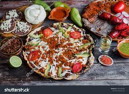

Tlayudas

The Mexican dishes we know and love—tacos, tamales, burritos, and quesadillas—barely scratch the surface of what this incredible cuisine has to offer. Many dishes skip the usual tortilla-beans-rice trio altogether: Think vibrant soups, messy sandwiches, and a cheesy grilled corn salad. Others are specific to their region, like a shrimp classic from the coastal state of Sinaloa or tortilla pizzas from Oaxaca. All are worth adding to your Mexican meal rotation, especially with these easy, authentic recipes.
Ingredients
- 1 (15 ounce) can refried beans
- 6 (7 inch) corn tortillas
- cooking spray
- 1 ¾ cups shredded Mexican cheese blend
- 3 roma (plum) tomatoes, seeded and diced
- 2 green onions, sliced
- ½ cup chopped fresh cilantro
- 1 (4 ounce) can sliced black olives, well drained
Steps
- Heat refried beans in a microwave-safe bowl in the microwave on high until warmed through, about 2 minutes, stirring after 1 minute.
- Spray both sides of each corn tortilla with cooking spray and arrange them on a wire rack.
- Heat a non-stick skillet over medium-high heat. Pan-fry one side of each tortilla until lightly browned, about 3 minutes. Return tortillas to wire rack, browned sides up.
- Spread a thin layer of refried beans onto the tortillas, stopping about 1/2 inch from the edge.
- Sprinkle Mexican cheese blend over refried beans.
- Carefully transfer a tortilla pizza back to the skillet, bean side up.
- Carefully transfer a tortilla pizza back to the skillet, bean side up.
- Scatter tomatoes, green onions, cilantro, and olives over melted cheese.
- Slice pizzas to serve.